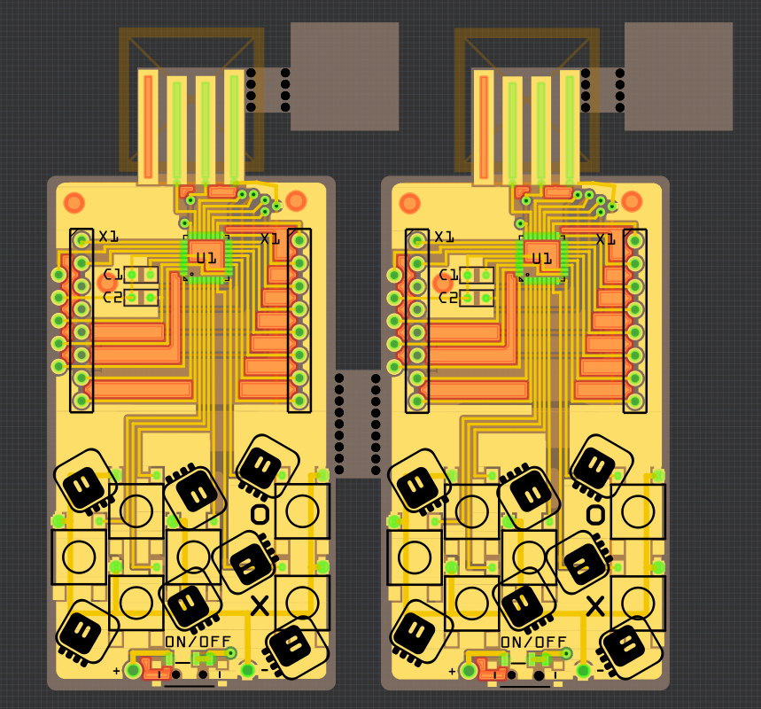

Boards Ordered¶
Published on 2018-07-16 in PewPew Standalone.
I just made a few last-minute fixes, and ordered the boards for DirtyPCBs. Their shipping seems to be working again, and I want to support them for not caring about how your project is panelized and how many “distinct” designs there are.
I decided to use white PCBs again, mostly because the matrix’s outside is white too, and because I found white battery holders on Aliexpess. I used a cheap shipping option, so it will be a few weeks — which is totally fine by me, because I’m going to the Europython conference next week anyways.
I also added those tiny squares there, which I’m going to glue under the USB plug. Since the PCB is 1.2mm thick, this will get me to the required 2.4mm thickness.